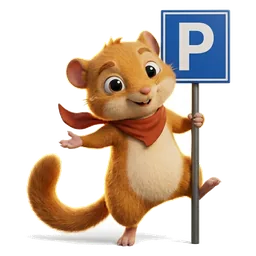
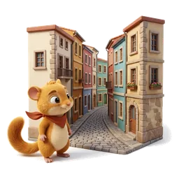
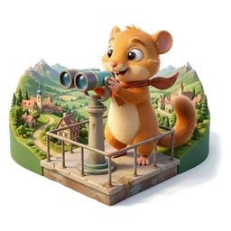

Jak to działa
-
01

Wybierz region i miastoGotowe miasta w regionie: wybierz to, które zwiedzacie dziś.
-
02

Jedź: nawigacja z telefonuJeden przycisk prowadzi do parkingu w Google Maps.
-
03
Zwiedzaj przystanek po przystanku
Opisy, misje dla dzieci i zadania foto w kolejności trasy.
-
04
Zakończ kolacją
Ostatni przystanek to restauracja. Rezerwacja przez WhatsApp.
Dlaczego Quolino
Dzieci grają, nie marudzą
Każdy przystanek to misja: znajdź gryfa, policz gwiazdy, sfotografuj zamurowane okno. Zwiedzanie zamienia się w quest.

Godziny pod klimat
Trasa omija południowy upał. Start późnym popołudniem, finał kolacją przy zachodzie słońca.
Zaczynasz od parkingu
Przystanek nr 1 to zawsze parking: cena, nawigacja i ostrzeżenie o strefie ZTL. Bez krążenia i mandatów.
Rodzinne przewodniki po miastach Europy: od parkingu do kolacji
Quolino to gotowe plany wycieczek jednodniowych dla rodzin z dziećmi, podróżujących autem po Europie. Każde miasto rozpisane godzina po godzinie: gdzie zaparkować, co zobaczyć, ile kosztują bilety i gdzie zjeść kolację.
Ale Quolino to nie kolejny przewodnik z listą zabytków. To gra terenowa w prawdziwym mieście: każdy przystanek ma misję dla dzieci. Znajdź gryfa na fasadzie, policz gwiazdy na mozaice, sfotografuj zamurowane okno. Dziecko nie marudzi „kiedy wracamy", bo jest zajęte questem. Rodzice zwiedzają w spokoju.
Godziny dostosowane do klimatu. W ciepłych krajach trasa omija południowy upał. Zwiedzanie zaczyna się późnym popołudniem, kończy kolacją przy zachodzie słońca. Zero bitew z trzydziestopięciostopniowym skwarem i skwierczącym dzieckiem.
Zaczynasz od parkingu. Każde miasto otwiera się informacją, gdzie zostawić auto: z ceną, linkiem do nawigacji i ostrzeżeniem o strefie ZTL. Koniec z krążeniem po zakazanych strefach i mandatami z kamer.
Aktualnie dostępny region: Marche i Umbria (Włochy). 7 miast, 46 przystanków, kompletne plany na 7 dni. W przygotowaniu: Toskania, Kraków i okolice.
Dla kogo jest Quolino
- Rodziny z dziećmi 9–16 lat podróżujące autem po Europie
- Rodzice, którzy nie chcą planować: gotowy plan, otwierasz i jedziesz
- Rodziny szukające czegoś więcej niż plaża: kultura i zabawa zamiast leżaka
- Polscy turyści we Włoszech: przewodniki po polsku, z rozmówkami i WhatsAppem do restauracji
Co jest w każdym przewodniku
- Parking jako przystanek nr 1: z ceną, nawigacją i informacją o ZTL
- 5–9 przystanków z cenami biletów i opisami
- Misje i zagadki dla dzieci przy każdym przystanku
- Zadania fotograficzne: album ze wspólnych zdjęć z podróży
- Ciekawostki historyczne dla dorosłych: daty, kontekst, anegdoty
- Kolacja jako ostatni przystanek: z linkiem do WhatsApp restauracji
- Plan awaryjny: apteka, toalety, plac zabaw, szpital
- Rozmówki w języku lokalnym
- Zdjęcia zabytków z Wikimedia Commons